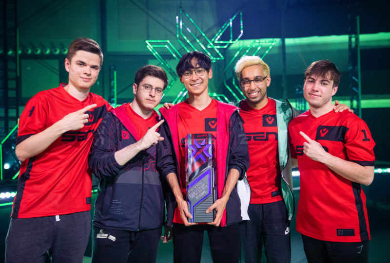
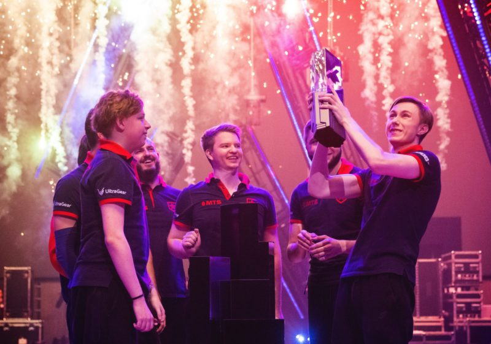
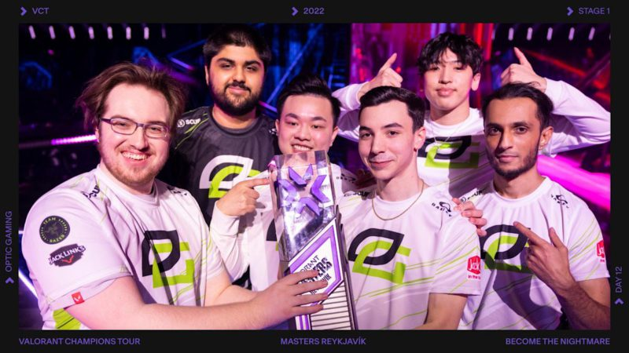
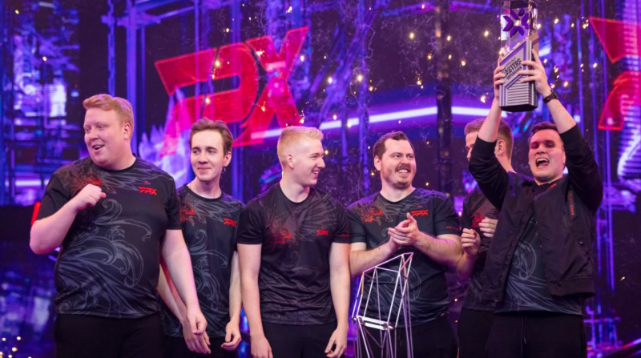
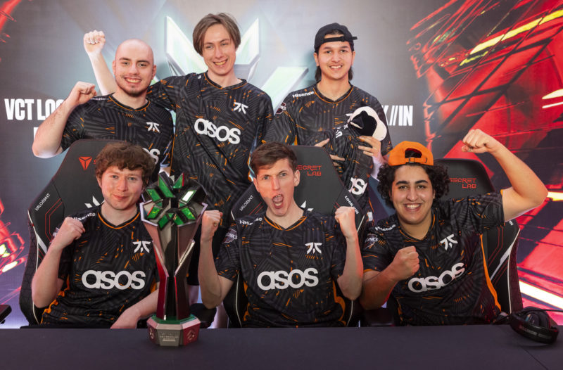
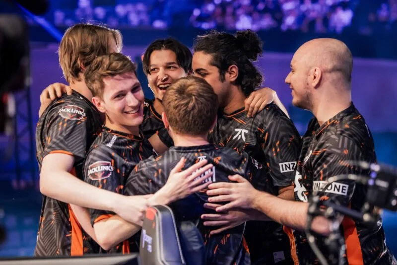

|
| |
Master reykjavik:Desde o lançamento do VALORANT, apenas um time conquistou um torneio internacional sem perder nenhum mapa: a Sentinels. No primeiro evento onde as equipes de todo o mundo se enfrentaram, o time norte-americano brilhou para levantar o troféu de forma invicta.
Formada por TenZ, SicK, ShahZaM, zombs e dapr, a Sentinels superou Fnatic, Vikings e NUTURN para chegar na grande final do evento. Lá, ela voltou a encarar a Fnatic e venceu novamente, desta vez por 3 a 0, e levantou o troféu do primeiro evento internacional de VALORANT.

Master Berlin:O segundo torneio internacional de VALORANT foi conquistado pela Gambit em outubro de 2021. Composta por Chronicle, nAts, Redgar, Sheydos e d3ffo, a escalação russa chegou ao evento como grande favorita ao título e não decepcionou.
A Gambit terminou sua campanha no grupo C da competição com duas vitórias contra a Crazy Racoon e uma derrota para a 100 Thieves, avançando em segundo lugar. Nos playoffs, os russos superaram Vision Strikers e G2 para alcançar a decisão, onde levaram a melhor diante da Envy por 3 a 0 e levantaram o troféu do Masters Berlim.

O VALORANT Champions 2021: foi o primeiro mundial da modalidade, foi vencido pela Acend. Liderada por cNed, a equipe europeia conquistou a competição sem perder nenhuma série. Além do astro turco, a equipe também contava com BONECOLD, Kiles, starxo e zeek na escalação, conquistando a primeira edição do Valorant Champions

Masters ReykjavikApós começar o torneio com o pé esquerdo com uma derrota para a XERXIA, a OpTic venceu KRU e teve sua vingança contra os tailandeses para avançar aos playoffs em segundo lugar do grupo B. Na fase seguinte, os norte-americanos superaram The Guard e DRX para alcançar a final da chave superior, onde seriam derrotados pelos brasileiros da LOUD por 2 a 1, sendo forçados a jogar a lower bracket. Na final da chave inferior, a OpTic não teve dificuldades para vencer a ZETA por 3 a 0 e avançar para a decisão contra a LOUD. Em uma série muito disputada, yay e seus companheiros levaram a melhor diante dos brasileiros por 3 a 0 e levantaram o troféu do Masters Reykjavík 2022.

Maters Copenhagen:Vice-campeã do VCT EMEA, a FPX chegava ao Masters Copenhagen como uma das favoritas ao título. Formada por ANGE1, SUYGETSU, Shao, Zyppan e ardiis, o time europeu não teve vida fácil na competição e teve que se provar para levantar o troféu na Dinamarca. A FPX avançou para os playoffs como segunda colocada do grupo B com um recorde de 2-1. A equipe liderada por ANGE1 estreou com vitória sobre a XERXIA, porém foi derrotada pela DRX e teve um duelo decisivo contra a Northeption pela vaga, onde venceu por 2 a 0. Nos playoffs, a FPX perdeu sua primeira partida contra a Fnatic e logo de cara caiu para a chave inferior. Apesar de estar em uma situação delicada e não poder mais ser derrotada no torneio, o time europeu se superou para vencer Guild, DRX, Fnatic e OpTic, alcançando a decisão. Embalada por boas performances, ardiis e companhia levaram a melhor diante da Paper Rex por 3 a 2 e ficaram com o título.

Valorant Champions 2022:Após ficar com o segundo lugar no Masters Reykjavík, a LOUD não decepcionou e conquistou o mundo. Contando com um quinteto composto por Sacy, Saadhak, Less, aspas e pANcada, a equipe brasileira apresentou uma performance dominante para conquistar o VALORANT Champions 2022, torneio mais importante da temporada competitiva. A LOUD começou sua campanha no mundial com uma vitória sobre a ZETA, porém acabou sendo derrotada pela OpTic e teve que enfrentar os japoneses novamente em uma revanche que valia a última vaga do grupo nos playoffs. Sem dar chances aos adversários, Sacy e seus companheiros levaram a melhor por 2 a 0 e avançaram. No mata-mata, a LOUD brilhou. A equipe brasileira venceu Leviatán pelas quartas, DRX pelas semis e OpTic pela final da chave superior e alcançou sua segunda final internacional. Lá, a equipe esmeraldina teve uma atuação excepcional, superou a OpTic novamente,dessa vez por 3 a 1 -, conseguiu sua vingança pelo vice no Masters e conquistou o título mundial.

VCT lock inPrimeiro torneio internacional da nova era das franquias do VALORANT, o VCT Lock In aconteceu em São Paulo e teve a Fnatic como grande campeã. Com um formato de eliminação simples, onde uma derrota significava dar adeus ao título, o evento contou com a participação de todos os 30 times parceiros e foi o maior da história do FPS da Riot Games. Composta por Boaster, Derke, Alfajer, Leo e Chronicle, a Fnatic superou Sentinels, FURIA, 100 Thieves e NAVI sem perder nenhum mapa para chegar na grande decisão do VCT Lock. Lá, os europeus venceram a brasileira LOUD por 3 a 2 em uma série emocionante com direito a uma grande virada no quinto mapa,e levantaram o troféu do VCT Lock In diante de um Ibirapuera lotado.

Masters Tokyo 2023:Mais de dois anos após seu vice-campeonato, a Fnatic é a grande campeã do VALORANT Masters Tokyo 2023. Em série disputada neste domingo (25) contra Evil Geniuses, o campeão do VCT LOCK//IN São Paulo venceu por 3 a 0 e se torna o primeiro time no mundo a vencer dois campeonatos internacionais no FPS.Composta por Derke,Alfajer,Boster, Chronicle e Leo

Valorant Champions 2023A Evil Geniuses é a grande campeã do VALORANT Champions 2023. Em final disputada neste sábado (26) em Los Angeles, nos Estados Unidos, a equipe norte-americana conseguiu sua revanche contra Paper Rex, do Pacífico, pelo placar de 3 a 1 e se sagrou campeã mundial pela primeira vez.Sendo composta por Jawgemo, Apotheon, Derrek, Nature, Supamen